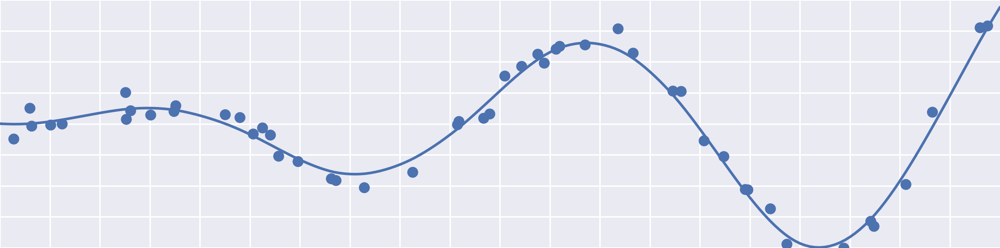

mathtoolbox

A library of mathematical tools (regression, interpolation, dimensionality reduction, clustering, etc.) written in C++11. Eigen http://eigen.tuxfamily.org/ is used for the interface and internal vector/matrix representation.

Algorithms
Scattered Data Interpolation and Function Approximation
rbf-interpolation: Radial basis function (RBF) networkgaussian-process-regression: Gaussian process regression (GPR)
Dimensionality Reduction and Low-Dimensional Embedding
Numerical Optimization
backtracking-line-search: Backtracking line searchbfgs: BFGS methodl-bfgs: Limited-memory BFGS methodstrong-wolfe-conditions-line-search: Strong Wolfe conditions line search
Dependencies
- Eigen http://eigen.tuxfamily.org/
- NLopt https://nlopt.readthedocs.io/ (included as gitsubmodule)
- nlopt-util https://github.com/yuki-koyama/nlopt-util (included as gitsubmodule)
- optimization-test-function https://github.com/yuki-koyama/optimization-test-functions (included as githsubmodule)
Build and Installation
mathtoolbox uses CMake https://cmake.org/ for building source codes. This library can be built, for example, by
git clone https://github.com/yuki-koyama/mathtoolbox.git --recursive
cd mathtoolbox
mkdir build
cd build
cmake ../
make
and optionally it can be installed to the system by
make install
When the CMake parameter MATHTOOLBOX_BUILD_EXAMPLES is set ON, the example applications are also built. (The default setting is OFF.) This is done by, for example,
cmake ../ -DMATHTOOLBOX_BUILD_EXAMPLES=ON
make
Installing Prerequisites
macOS:
brew install eigen
Ubuntu:
sudo apt install libeigen3-dev
Projects Using mathtoolbox
- SelPh https://github.com/yuki-koyama/selph (for
classical-mds)
Licensing
The MIT License.